In 2023, opsci will keep decoding opinion,
enlightening seas of communities, practices, aspirations and leaders,
detecting their emergence and revealing their dynamics...

Happy New Year!
Show real colors